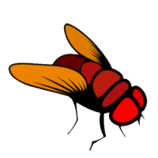

About My Research
The concurrent increase in available connectome data for model organisms such as the fruit fly Drosophila melanogaster and dramatic growth in the availability and power of commodity parallel computing technology raises the tantalizing possibility of constructing and testing computational models of entire biological brains. Much neuroinformatics research has focused on how provide and/or utilize the computational resources necessary to efficiently emulate the brain's massively parallel operation. While computational efficiency is essential to brain modeling, our current lack of knowledge regarding the appropriate computational paradigm to employ makes optimization of neural simulator performance premature. Moreover, focusing exclusively on computational efficiency overlooks other requirements that are as least as important to developing a successful brain model.
Although far more tractable than the human brain, the complexity of the brain of the fruit fly is such that effectively combining the efforts of multiple researchers is essential to the successful reverse engineering of the fly brain. The multiplicity of neural simulators and modeling tools currently available complicates collaborative model construction because of the difficulty of combining models of different parts of the fly brain devised by different researchers. The inability to easily combine hypotheses regarding the information processing capabilities of different parts of the brain prevents the neuroscience community from pursuing an effective divide-and-conquer strategy to reverse engineering the fly brain's functions.
To address the above requirements, I developed an open software platform for collaborative construction and execution of models of the brain of the fruit flyDrosophila melanogaster. This system is called Neurokernel because it serves as an operating system kernel vis-a-vis models of the fly brain of the fruit fly; just as a traditional computer operating system must be able toallocate computational resources and serve as an extended machine that provides services required by software applications, so too must Neurokernel be able to allocate parallel computational resources and provide the programmability (e.g., software interfaces, data transmission services, numerical models of constituent neural components, etc.) required to realize models of the fly brain. To explicitly facilitate collaborative development of an accurate fly brain model, Neurokernel
- provides an explicitly open framework for interconnection and parallel execution of independently developed models of different functional modules called Local Processing Units in the fly brain;
- is implemented in Python, a high-level language that has enjoyed increasing popularity in the computational neuroscience community; and
- leverages commodity parallel computing technology found in Graphics Processing Units (GPUs) to empower as many researchers as possible to contribute to the modeling of the fruit fly brain.
Neurokernel is an active open source project whose development is being continued by researchers at multiple institutions.. More information about the project (and the latest source code!) is available on GitHub.